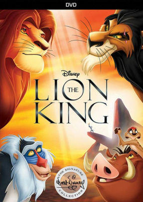
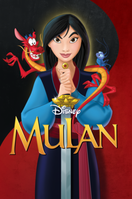

The Lion King/Король Лев
В зверином царстве, возглавляемом величественным львом, правит бал справедливость и дружелюбие. Солнечный свет заливает огромные территории земли, на которой каждый сможет прокормиться. Но когда от предательства своего завистливого брата погибает король, а его маленький сын, незаслуженно обвиненный дядей, сбегает, все трагично меняется. Разруха, голод, власть злобных гиен приходят на смену былому счастью.Сможет ли повзрослевший наследник найти в себе силы, чтобы вернуться домой и навести порядок в собственных владениях? Со временем королевская кровь дает о себе знать…

Treasure Planet/Планета Сокровищ
16-летний Джим Хоукинс отправляется на поиски таинственной Планеты Сокровищ в компании настоящих космических пиратов. Под руководством корабельного кока, киборга Джона Сильвера, он становится умелым «космоплавателем» и не раз спасает космический галеон от самых серьезных опасностей: черных дыр, взрывов сверхновых и космических штормов.

Brother Bear/Братец Медвежонок
Давным-давно, в те времена, когда по Земле ходили мамонты, а вечные льды достигали южных морей, жил охотник по имени Кенаи. Он был храбр и ловок, но однажды прогневил Великих Духов, убив медведицу — священного для него зверя, чей тотем он носил на шее. Тогда духи предков в наказание превратили в медведя самого Кенаи. Теперь он не может говорить по-человечески, за ним охотится его собственный брат, а еще к нему прибился озорной медвежонок Кода, не желающий оставить героя в покое. Но духи не зря свели Кенаи с Кодой — в час, когда охотник увидит в медвежонке родственную душу, он сможет снова стать человеком…

Mulan/Мулан
Для великого народа наступили тяжелые времена: на страну напало воинственное племя гуннов. Переодевшись в мужскую одежду, Мулан присоединяется к другим воинам и отправляется в опасный поход к подножию заснеженных гор. Ее сопровождает забавный дракончик Мушу, который больше похож на маленькую собачку, чем на мифическое чудовище.